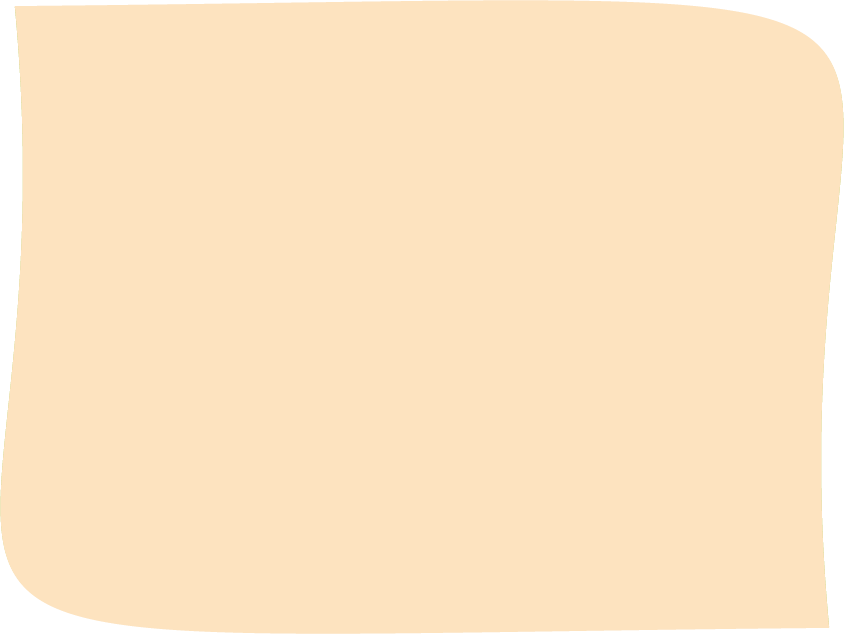
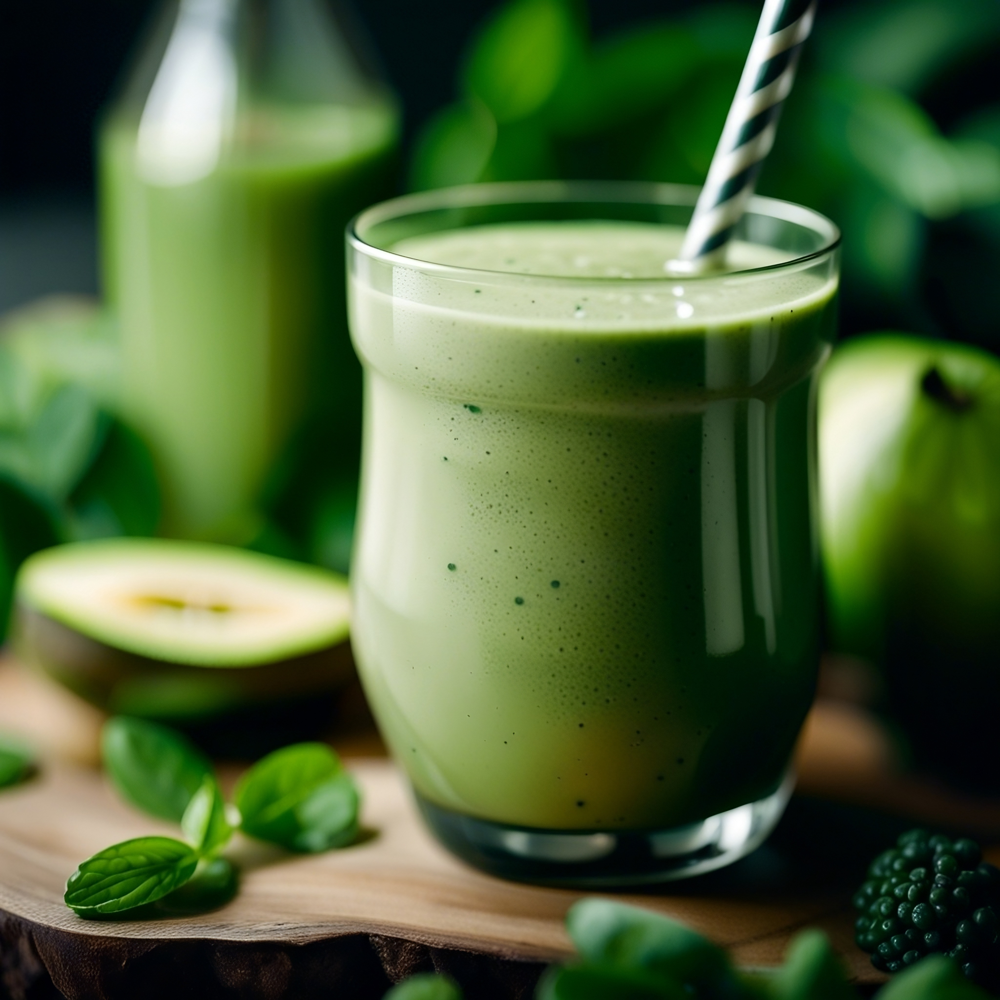

100% ekologiskt
Vi väljer råvaror med fokus på kvalitet, smak och naturlighet.

Växtbaserade smoothies för en enklare och mer energifylld vardag.
Läs mer om ossSundora erbjuder växtbaserade smoothies med naturliga råvaror för en enkel och hälsosam vardag.
Se produkterVARFÖR SUNDORA?
Våra smoothies är skapade för att göra det enkelt att få in mer frukt, bär och grönt i vardagen.

Vi väljer råvaror med fokus på kvalitet, smak och naturlighet.
Enkla ingredienser utan onödiga tillsatser.
Ett smidigt alternativ för jobb, träning eller familjeliv.
ENERGI I VARDAGEN
Sundora handlar inte bara om smoothies. Vi vill inspirera till mer rörelse, bättre vanor och en enklare vardag.
Läs inspirationHITTA DIN FAVORIT
Upptäck våra olika smaker och hitta en smoothie som passar din vardag.